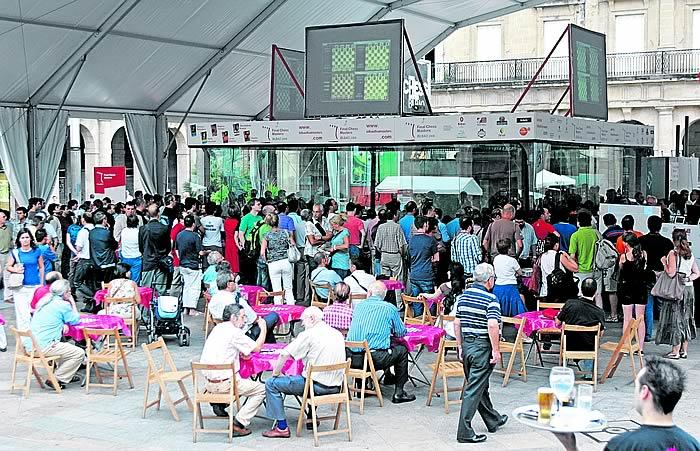

|  |
| 'Chess aquarium' at Plaza Nueva in Bilbao |
Players who did well in super tournaments were
invited for Grand Slam Finals. The scoring system was three points
for a win, one for a draw and zero for a loss.
The results were:
Bilbao 2008: Topalov 17, Aronian and Carlsen
13, Ivanchuk 12, Radjabov 10 and Anand 8.
Bilbao 2009: Aronian 13, Grischuk 8, Karjakin 7
and Shirov 3.
Shanghai 2010 (semifinal): Shirov and Kramnik qualified.
Bilbao 2010: Kramnik 10, Anand 8, Carlsen 6, Shirov 4.
Sao Paulo/Bilbao 2011: Carlsen and Ivanchuk 15, Nakamura, Aronian and Anand, Vallejo Pons 10. Carlsen won the playoff.
Sao Paulo/Bilbao 2012: Caruana and Carlsen 17, Aronian 11, Karjakin 10, Anand 9, Vallejo Pons 6. Carlsen won the playoff.
Bilbao 2013: Aronian 10, Adams 9, Vachier Lagrave and Mamedyariv 5.
Bilbao 2014: Anand 11, Aronian 10, Ponomariov and Vallejo Pons 5.
pgn-file annotated
games of Grand Slam
Chess zip-CBfile
Grand Slam Chess
 |
Go to home page |